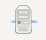

|
Avant de pouvoir lancer un inventaire de données, il convient de renseigner dans Anjety la ou les bases de données à interroger. Pour cela, cliquez sur le bouton  afin d'ouvrir le panneau de gestion des bases de données :
Cliquez maintenant sur ce bouton afin d'ouvrir la fenêtre d'édition des bases de données :
Renseigner les champs comme demandé :
- Libellé : Nom qui permettra d'identifier la base de données
- Adresse : Adresse IP ou nom DNS de l'équipement hébergeant la base de données
- Instance : Nom de l'instance de base de données Oracle qui sera utilisé pour la connexion
- Utilisateur : Nom d'utilisateur qui sera utilisé pour la connexion à la base de données
- Mot de passe : Mot de passe qui sera utilisé pour la connexion à la base de données
Cliquez maintenant sur "Valider" pour terminer la déclaration de la base de données, sur "Tester" pour tester la connexion, ou sur "Annuler" afin de quitter l'assistant sans sauvegarder la base de données.